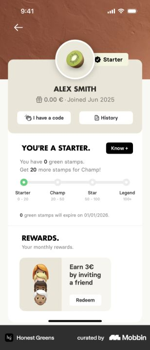
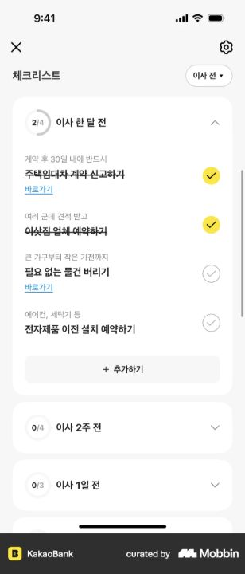
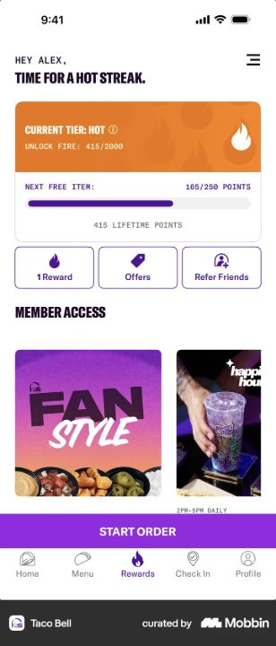

Три способа связать действия, период и награду. Ниже — идеи адаптации к вкладу.
Honest Greens
Линия с четырьмя уровнями

В референсе: один общий путь, четыре точки и названия уровней.
Для нашего вклада: четыре месяца на одной линии: 11 → 12 → 13 → 16%. Под выбранным месяцем — два окна пополнения.
Открыть экран на Mobbin ↗
KakaoBank
Период и вложенные действия

В референсе: раскрывающиеся периоды, задачи внутри и счётчик выполнения.
Для нашего вклада: каждый месяц — строка со ставкой и 0/2. При раскрытии — первое и второе пополнения с датами.
Открыть экран на Mobbin ↗
Taco Bell
Текущий уровень и следующий шаг

В референсе: текущий уровень отдельно от прогресса до следующей награды.
Для нашего вклада: одна карточка месяца — целевая ставка, два сегмента прогресса и ближайший срок. Остальные месяцы — компактно.
Открыть экран на Mobbin ↗
Публичные экраны Mobbin, просмотрены 14 октября 2026. Перенос механики на вклад — предложение, а не описание функций этих приложений.